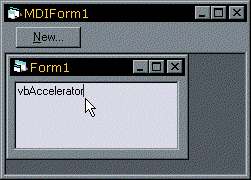

VB5 Windows Hook Library Binary (17K)
VB5 Windows Hook Library Binary (17K)
 VB5 Windows Hook Library Full Source (61K)
VB5 Windows Hook Library Full Source (61K)
 VB6 Windows Hook Library Binary (17K)
VB6 Windows Hook Library Binary (17K)
 VB6 Windows Hook Library Full Source (60K)
VB6 Windows Hook Library Full Source (60K)
 27 Jun 2003
27 Jun 2003
Added support for Journal Record and Playback hooks
Added MsgFilterlParam method for working with the WH_GETMESSAGE Hook.
 vbAccelerator Accelerator Control
vbAccelerator Accelerator Control
 (Incomplete) Docking Forms In VB
(Incomplete) Docking Forms In VB

Win32 Hooks in VB - The vbAccelerator Hook Library
The ultimate low-level control over Windows
When a subclass isn't tough enough for the job, its time to move to an even lower-level and more disruptive technique. Win32 Hooks are a method by which you can tap into the Windows message stream for every single message directed to every window in your application. You can modify or even discard messages before they even reach the target window. This technique gives you a lot of control!
Windows Hooks are defined in the Win32 SDK as follows:
- "A Windows hook is a point in the system message-handling mechanism where an application can install a subroutine to monitor the message traffic in the system and process certain types of messages before they reach the target window procedure."
- "Hooks tend to slow down the system because they increase the amount of processing the system must perform for each message. You should install a hook only when necessary, and remove it as soon as possible."
About Hooks
This section provides a detailed look into what hooks consist of, why you use them and the various types available:
- Hooks Compared to Sub-Classing
- An Example
- Hook Scope: System Wide or Local Thread Hooks
- Types Of Windows Hooks
- Hook Chains
1. Hooks Compared to Sub-Classing
Essentially a Windows Hook is like a subclass except it applies at the next point up in the message chain. In Win32, messages are queued and sent to the appropriate window via the WindowProc function. A subclass can intercept messages by replacing the existing WindowProc function with a new one.
With a Hook, you get to see all messages before Windows has decided which WindowProc procedure to direct the message to. You can modify or discard most messages at this point too. So using the Hook technique you not only get to act on messages at the highest point; you can also get at messages regardless of which window the message is intended for. This is very useful if you want to process Keyboard or Mouse messages on a global basis in your application, because these messages are normally directed to the window with the focus. If you tried to do the same thing using Subclassing then you would have to subclass every single window handle in your application to follow the mouse events. Using a Hook, the process is simple!
2. An Example
MDI Form with a 'Toolbar' button
If you create a VB application like the one shown above, you'll find that it doesn't behave like you would expect a normal Windows application to. Since the N mnemonic is visible on screen, it should be accessible at any time by pressing Alt+N. However, this is isn't the case in VB - in fact Alt+N only does anything when the MDI form has the focus, which is clearly a bug.
This is actually a fundamental problem in VB for MDI forms - there is no way for an accelerator on another form to be active when there is a child form active. We could solve this problem by duplicating the New button onto the child form, but in order for it to respond to accelerator keys it must be visible and part of the tab order - not what you want.
Solving the problem with a Windows Hook on the other hand is quite simple. We install a hook of type WH_KEYBOARD. Then the app receives all keyboard events for the entire application. When the keyboard events indicate that Alt+N has been pressed, the code just needs to check whether the MDIForm is the same as the window returned by GetActiveWindow; if it is it then the code fires the cmdNew_Click event and eats the keyboard message.
3. Hook Scope: System Wide or Local Thread Hooks
One of the features of the Win32 Hook functions is that they allow you to specify whether the scope of your hook is local to the current thread or whether it applies to all windows in the entire system. System Wide hooks are always a topic of interest because they let you read data intended for or otherwise modify windows owned by other applications; for example the Window Blinds application uses this method to apply a skin when drawing all windows on your system (well, it tries to, anyway!)
Before you get excited, though, VB on its own cannot be used to create a system-wide hook. This is because the hook procedure must reside within a Windows DLL, and VB cannot create these beasts (because you cannot specify to export the HookProc function). Also I should point out that system-wide hooks aren't much fun to write: you can't debug them very easily, and if anything goes wrong it takes your whole system down! If you have some C/C++ knowledge, however, there are various samples of creating system-wide hooks at MSDN and CodeGuru.
4. Types Of Windows Hooks
There are 14 different types of Windows Hooks defined in Win32, however, some of these are not implemented and some cannot be used in Visual Basic or are of very limited value when not used System Wide.
That leaves the following:
- WH_KEYBOARD
Intercepts all keyboard messages and allows you to modify or discard any message (except Ctrl+Alt+Del). For example, the vbAccelerator Toolbar, Rebar and CoolMenu uses this hook to check for accelerators.
- WH_MOUSE
Intercepts all mouse messages and allows you to modify or discard any message.
- WH_CALLWNDPROC
Before Windows is about to call any window procedure within the scope of the Hook, it fires this hook with the details of the parameters it will use to call the window procedure. It allows you to modify any of the parameters of the message sent and hence provides considerable opportunity to radically change (or break) the way Windows works.
- WH_CALLWNDPROCRET
Similar to WH_CALLWNDPROC except it is called whenever a window procedure within the scope of the Hook returns. It allows you to modify the return value or parameters for the message. For example, the Animated Cursors in VB sample uses this to capture the WM_SETCURSOR message for every window to emulate the Screen.MousePointer property.
- WH_MSGFILTER
This Hook allows you to process or modify all messages meant for all the dialog boxes, message boxes, scroll bars or menus in an application. For example, the vbAccelerator Toolbar, Rebar and CoolMenu control uses this hook to find out what messages are being sent when menus are dropped down, so it can close Popup Menus depending on where the mouse is.
- WH_GETMESSAGE
This Hook is called whenever a window within the Hook scope calls the GetMessage or PeekMessage functions.
- WH_CBT
Computer-based training hook. Fired when windows are created, destroyed, moved and activated etc. This Hook is intended for use to capture a sequence of messages which can be replayed for CBT apps, however, better uses for it include detecting the window handle of API windows like Menus, Common Dialogs and Message Boxes and the one MFC puts it to - automatically detect creation of all windows within an application and applying a subclass procedure to each one.
- WH_JOURNALRECORD and WH_JOURNALPLAYBACK
These hooks enables you to monitor and record input events for later playback. The interesting thing about these hooks is that even though they only work when installed on a system-wide scope, they can send and receive input messages on a system-wide basis from within a local process.
5. Hook Chains
When you install a Hook, Win32 actually adds it to what is termed the "Hook Chain". This allows you to install multiple Hooks of the same type in an application. When the first Hook is added, Windows places it at the start of the chain and begins passing messages to the Hook and receiving them from it. If another hook of the same type is added on the same thread, windows then directs output from the first hook to the second one before receiving the output for its own use.
This means that you must be careful when using a Hook to modify or remove messages. If there are two Hooks on the same thread, and one removes messages, behaviour may differ depending on the order the Hooks are installed. In VB there is very little control over the order that controls are created so you should attempt to ensure the same hook procedure is used for all objects that install a hook.
The vbAccelerator Windows Hooks Library
The vbAccelerator Windows Hooks Library is designed to simplify the process of working with hooks in your application. It provides a series of functions for installing and removing hooks and ensures multiple clients use the same hook function rather than installing multiple chained hooks. It is designed to be used either as a DLL or compiled directly into your application. An example of compiling the library directly into code is provided in the vbAccelerator Accelerator control, so this section will cover using the DLL version.
The Hooks Library consists of two parts:
- IWindowsHook
You must implement this interface to use the Hook library. Once your object implements this interface, then whenever the Hook(s) you connect to fire, the IWindowsHook_HookProc method will be called with the Hook information.
- GHook
This interface allows you to attach and detach a Hook, as well as providing some helper functions for translating the lParam member of the hook function, which contains the details about the message being intercepted by the Hook.
Quick Start
This sample will give you a quick introduction to the Hooks library. Start a new project, and add a reference to the vbAccelerator Window Hooks Library by choosing Project->References and selecting the "vbAccelerator Windows Hook Helper DLL". If it isn't there, click Browse and search for vbalHook.DLL (VB5) or vbalHook6.DLL (VB6) on your disk. Once you have a reference, add various controls to your form including a TextBox control. Then add the following code:
Implements IWindowsHook
Private Sub Form_Load()
InstallHook Me, WH_KEYBOARD
End Sub
Private Sub Form_QueryUnload( _
Cancel As Integer, UnloadMode As Integer)
RemoveHook Me, WH_KEYBOARD
End Sub
Private Function IWindowsHook_HookProc( _
ByVal eType As EHTHookTypeConstants, _
ByVal nCode As Long, _
ByVal wParam As Long, _
ByVal lParam As Long, _
bConsume As Boolean _
) As Long
If KeyBoardlParam(lParam).KeyDown Then
If Me.ActiveControl is Text1 Then
txtTest.SelText = " "
bConsume = True
End If
End If
End Function
Now run the project. Whenever the TextBox control Text1 is in focus, pressing the tab key will cause the tab characters to be entered into the text box rather than moving to the next control in the tab index. This works because all key presses in the project are sent through the IWindowsHook_HookProc function before being sent to any control or form. So you can consume any key press you want and stop it ever reaching the control! Now that's control...
The Sample Code
There are two samples provided with the download:
- HookKeyEvents
This sample shows how to hook key events using a WH_KEYBOARD hook, similar to the Quick Start sample above. It demonstrates tab key handling in a TextBox, ListBox and ComboBox and also how to make a form unload in response to the Escape key regardless of whether there is a CommandButton or Control with the Cancel property set.
- MouseHook
This sample demonstrates hooking mouse events. It uses a WH_MOUSE hook to intercept all mouse events before they reach the form or control. This allows the sample to provide:
- A status bar indication of which control the mouse is over.
- A "select controls" mode which works similarly to the selection of controls in the VB IDE.
Both pieces of code are completely independent of which specific controls are on the form - you can add as many new controls as you like to the form in any relationship to each other and the code will continue to work.
With a little more design work it should be possible to create a form designer which works exactly the same as the VB IDE from this sample!